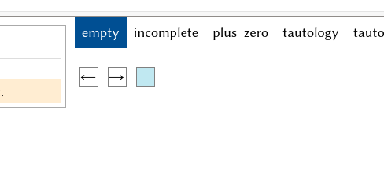
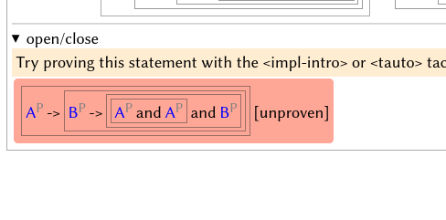
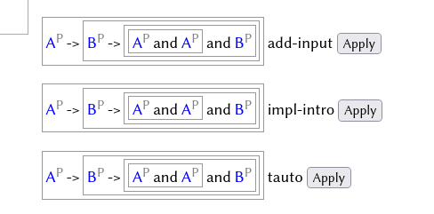
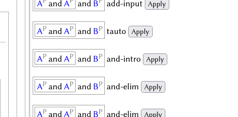
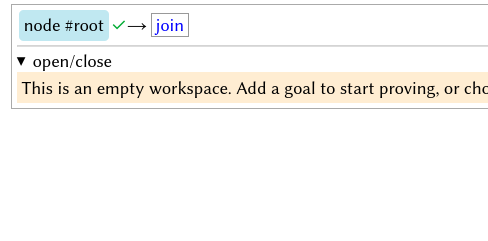
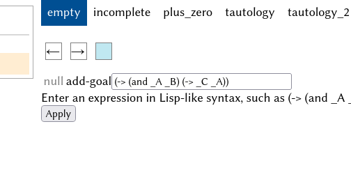
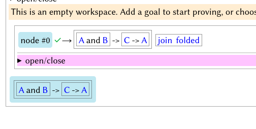
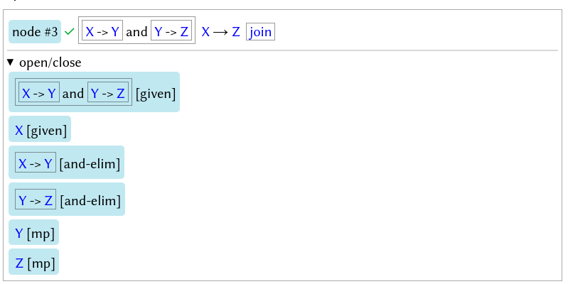
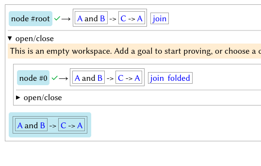

Saphyra 2024 Spring Report
Also published on GitHub
Saphyra is a proof assistant under development, with simplicity and user-friendliness as goals. As of April 1, 2024, it is able to verify some simple statements about natural numbers and automatically prove (propositional) tautologies with ≤ 6 atomic statements (the limit is artificially imposed to avoid long running loops). A Web user interface is also added, so you can prove propositions by clicking on suitable tactics.
This software is in its early stages and incomplete, but I have plans to continue developing it and improving it.
Click here to try the Web demo
Using the Web demo
Prove a given goal:
- Click on the “incomplete” tab to enter this workspace.
- 
- The red block on the left is a goal not yet proven; click on it to see a list of tactics.
- 
- Apply the tactic
impl-introto create a subgoal: proving (B → (A and A) and B) using A.- 
- Use
impl-introon the new goal again. - Use
and-introtwice to destruct the goal into A, A, and B.- 
- A is an exact match with the assumption A; use
exact-matchto resolve. - Similar for B.
- Now the entire workspace is verified.
Prove a custom goal:
- Click on the “empty” tab.
- Click on “node #root” on the top-left.
- 
- On the right, enter a new goal, such as
(-> (and _A _B) (-> _C _A)), then click “Apply”.- 
- Click on the new goal on the left, and select the
tautotactic. - Now the entire workspace is verified.
- 
- Click on “open/close” under “node #0” to see the whole proof.
Foundation and Proof Structure
Currently, Saphyra uses Peano Arithmetic as the foundation, but it can be extended (in the future) to use alternate foundations.
Proofs are structured as nested nodes. Each node represents a conditional truth, similar to a sequent; the following node, for instance, represents that “from the statements (X → Y) and (Y → Z) and X, we can derive Z”. Unlike a sequent, a node's outputs are conjunctive instead of disjunctive.

The node contains subnodes (here hidden) that when combined, proves Z from the assumptions using built-in axioms. Each statement is suffixed with the justification: whether it is given, or derived from a rule.
In a large proof, nodes represent structure; in the interface, nodes may be expanded or collapsed, so the user can focus on important parts of the proof.
The entire workspace is also a node, usually named “#root”.
Below is the internal representation of a successful proof.
[node #root [] [[forall [: _x:O [= _x:O [+ _x:O O]]]]] [join] [
[comment This is a proof of the theorem: forall x, x = x + 0.]
[node #2 [] [[forall [: _x:O [= _x:O [+ _x:O O]]]]] [forall-intro] [
[node #1 [] [[[: _x:O [= _x:O [+ _x:O O]]] _v0:O]] [join] [
[node #3 [] [[= [[: _x:O [= _x:O [+ _x:O O]]] _v0:O] [= _v0:O [+ _v0:O O]]]] [beta] []]
[node #4 [[= [[: _x:O [= _x:O [+ _x:O O]]] _v0:O] [= _v0:O [+ _v0:O O]]]] [[= [= _v0:O [+ _v0:O O]] [[: _x:O [= _x:O [+ _x:O O]]] _v0:O]]] [=-sym] []]
[node #5 [[= [= _v0:O [+ _v0:O O]] [[: _x:O [= _x:O [+ _x:O O]]] _v0:O]] [= _v0:O [+ _v0:O O]]] [[[: _x:O [= _x:O [+ _x:O O]]] _v0:O]] [equiv-elim] []]
[link #3 #4 [= [[: _x:O [= _x:O [+ _x:O O]]] _v0:O] [= _v0:O [+ _v0:O O]]]]
[link #4 #5 [= [= _v0:O [+ _v0:O O]] [[: _x:O [= _x:O [+ _x:O O]]] _v0:O]]]
[link #5 ^c [[: _x:O [= _x:O [+ _x:O O]]] _v0:O]]
[node #6 [[= [+ _v0:O O] _v0:O]] [[= _v0:O [+ _v0:O O]]] [=-sym] []]
[link #6 #5 [= _v0:O [+ _v0:O O]]]
[node #7 [] [[= [+ _v0:O O] _v0:O]] [+-O] []]
[link #7 #6 [= [+ _v0:O O] _v0:O]]
]]
]]
[link #2 ^c [forall [: _x:O [= _x:O [+ _x:O O]]]]]
]]
Statement Syntax
Statements are entered in a Lisp-like format, with variables (propositions or objects) beginning with an underscore (_).
| Statement | Code |
|---|---|
| A |
_A
|
| (A and B) → C |
(-> (and _A _B) _C)
|
| not A (equivalently, A → false) |
(-> _A false)
|
| ∀ x : Nat, x = x |
(forall (: _x:O (= _x:O _x:O)))
|
Codebase Introduction
js/ contains the code for the Web demo.
- The entry page is located at
start.html, which provides the page layout and imports JS files. run.jscontains most functionality for the user-interface.axioms.jscontains axioms for first-order logic and Peano axioms that can be verified by simple pattern-matching. More complicated axioms, such asimpl-intro, are given inproof_module_2.jslisp.jscontains an implementation of a minimal Lisp language. It is intended to be used for writing tactics, but is currently inactive.toposort.jsimplements topological sorting for dependencies of nodes, which denies circular reasoning.lambdas.jsprovides utilities necessary for lambda expression reasoning.simple_typing.jsoffers a simple type system.proof_module_2.jsis the main verifier. It takes a node (usually the entire proof tree), points out any incorrect nodes, and annotates the nodes for user-friendly displaying.nodeviz.jsvisualizes various objects. For example,dispStmt(obj)displays a statement in a user-readable way.tree_derivs.jscontains some example derivations.tactics.jsprovides tactics.- When the user selects a statement or a node, functions in
tactics.jsdetermine which rules or tactics are suitable for usage on that statement. - When the user selects a tactic, functions in
tactics.jsapply that tactic on the proof tree, generating a new #root node. - The
tautotactic breaks down the situation into 2^n cases, where n is the number of atomic statements in the goal, and uses suitable axioms to prove (evaluate) each case. - 
- When the user selects a statement or a node, functions in
src/ contains a Python version, which is temporarily paused.
Future Plans
- Complete Peano arithmetic and add tactics for natural numbers.
- Add unification for statements and types.
- Switch to ZFC / ETCS / Dependent Types as foundation, so that it may formalize most of modern mathematics.
- Improve automatic reasoning.